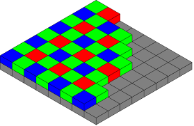
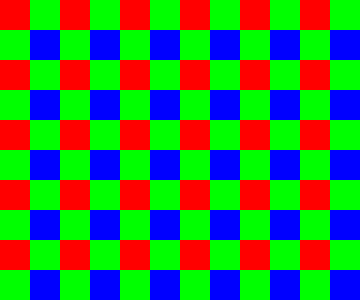
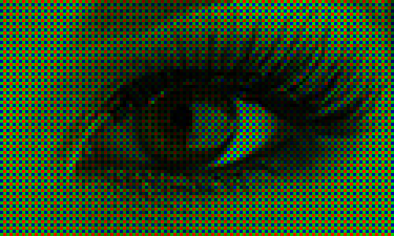

In the previous article, I’m started to describe my Raw2Fits converter. It was a brief note about GTK user interface development.
Now I want to talk about the LibRaw library. This is a great library for reading RAW files from digital photo cameras (CRW/CR2, NEF, RAF, DNG, and others).
{kind=link}
Take a look at the LibRaw project web page and official documentation.
I highly recommend using the latest stable release from this site instead of the precompiled version from Linux distros.
Getting and installing the library
Download and build the latest STABLE version of the LibRaw from the project downloads page.
For example, LibRaw-0.18.11.tar.gz as for 15 May 2018.
# Download archive $ wget https://www.libraw.org/data/LibRaw-0.18.11.tar.gz # Extract $ tar -xvf LibRaw-0.18.11.tar.gz # Remove downloaded file $ rm LibRaw-0.18.11.tar.gz # Go to extracted directory $ cd LibRaw-0.18.11 # Run configure script $ ./configure
After compilation, this library will be installed in /usr/local/lib. If you want to use standard /usr/lib configure script as follows:
./configure --prefix=/usr
But don’t forget to remove some previous/repository installation of the library!
Now build and install:
$ make $ sudo make install
These steps should be done without any errors. If problems check out the error messages and fix your environment, you can lack some required package, for example.
To use LibRaw, add the following parameters to the compiler call (when building your own projects):
- Path to include-files: -I/usr/local/include
- Path to libraries: -L/usr/local/lib
- Library: -lraw (ordinary version) or -lraw_r (thread-safe version).
If you configured the library for another path (/usr/lib) – correct these params to your own.
Library usage
There are two API’s available – C++ and pure C. They are quite similar by concepts and functions/methods naming. Of course, the C++ version uses objects and methods but C only structs and function calls.
In my project, I’m using the C version of the API, so we will use this language in the following examples. It is straightforward to switch to the C++ API after learning the basic concept of this library.
Everything we need is available only in one header file, so don’t forget to include the library at the beginning of your source file.
#include <libraw/libraw.h>
The library is accessed through libraw_data_t structure, which holds all library internals structures during program execution.
This structure must be initialized before usage:
libraw_data_t *rawdata = libraw_init(0);
And closed in the end:
libraw_close(rawdata);
The initialization method returns NULL in case of error, a pointer to the structure in all other cases. Some LibRaw methods may return integer error codes. You can convert these codes to human-readable strings using libraw_strerror() method.
Now we ready to load our RAW image from the file (picture.cr2, for example).
int err = libraw_open_file(rawdata, "picture.cr2");
if (err != LIBRAW_SUCCESS) {
printf("libraw_open_file failed! Error: %s\n", libraw_strerror(err));
libraw_close(rawdata);
}
Here you can see proper error checking and usage of the libraw_strerror().
libraw_open_file is very fast since these methods only access the file without any data loading and decoding.
After the file’s successful opening, we can unpack RAW data to get access to the image meta tags and actual image data.
err = libraw_unpack(rawdata);
if (err != LIBRAW_SUCCESS) {
printf("libraw_unpack! Error: %s\n", libraw_strerror(err));
libraw_close(rawdata);
}
This operation may require some time, depending on the file size and your computer resources.
We can get some visualization of the unpacking progress by setting progress handlers.
int decoder_progress_callback(void *arg, enum LibRaw_progress p,int iteration, int expected)
{
printf("%s, step %i/%i\n", libraw_strprogress(p), iteration + 1, expected);
return 0;
}
void *arg;
libraw_set_progress_handler(rawdata, &decoder_progress_callback, arg);
Arg is a pointer to custom data. You can put here everything you want to use in decoder_progress_callback.
This callback may terminate current image processing by returning a non-zero value. In such cases, all processing will be canceled immediately.
decoder_progress_callback must be called before actual data unpacking and decoding.
Unpacked images must be released at the end of the processing.
libraw_recycle(rawdata);
Accessing meta information
At this point, we can get some useful information from our RAW file: camera model, lenses, exposure, and other params. Note that depending on the camera vendor/model, some of the data may not be available.
There are few data structures available in libraw_data_t:
- libraw_iparams_t – The structure describes the main image parameters retrieved from the RAW file.
Most useful fields of this structure:
char make[64] - Camera manufacturer. char model[64] - Camera model. char software[64] - Softwary name/version unsigned raw_count - Number of RAW images in file
- libraw_image_sizes_t sizes -The structure describes the geometrical parameters of the image.
Fields of this structure:ushort raw_height, raw_width – Full size of a RAW image (including the frame) in pixels
ushort height, width – Size of visible (“meaningful”) part of the image (without the frame)
ushort top_margin, left_margin – Coordinates of the top left corner of the frame (the second corner is calculated from the full size of the image and size of its visible part)
ushort iheight, iwidth – Size of the output image (may differ from height/width for cameras that require image rotation or have non-square pixels)
double pixel_aspect – Pixel width/height ratio
int flip – Image orientation (0 if does not require rotation; 3 if requires 180-deg rotation; 5 if 90 deg counterclockwise, 6 if 90 deg clockwise) - libraw_lensinfo_t lens – The structure describes the lens used for the shot. Read the official documentation about this huge structure.
- libraw_imgother_t other – A data structure for information purposes.
Fields:float iso_speed – ISO sensitivity
float shutter – Shutter speed
float aperture – Aperture
float focal_len – Focal length
time_t timestamp – Date of shooting
unsigned shot_order – Serial number of image
unsigned gpsdata[32] – GPS data (unparsed block, to write to output as is)
libraw_gps_info_t parsed_gps – Parsed GPS-data: longtitude/lattitude/altitude and time stamp
char desc[512] – Image description
char artist[64] – Author of image
float FlashEC – Flash exposure compensation
Reading meta information.
// Camera & user information
printf("Camera vendor: %s\n", rawdata->idata.make);
printf("Camera model: %s\n", rawdata->idata.model);
printf("Camera owner: %s\n", rawdata->other.artist);
// Date of shooting
char time_buf[25];
struct tm *utc_tm = gmtime(&rawdata->other.timestamp);
strftime(time_buf, 25, "%Y-%m-%dT%H:%M:%S", utc_tm);
printf("Date of shooting: %s\n", time_buf);
// Shooting params
printf("Exposure: %d\n", rawdata->other.shutter);
printf("Aperture: %d\n", rawdata->other.aperture);
Getting image
You can get a RAW image buffer from the library to do all post-processing by yourself. But in this case, you have to deal with Bayer RGB filters.
Bayer color filter array is a popular format for the digital acquisition of color images. The pattern of the color filters is shown below. Half of the total number of pixels are green (G), while a quarter of the total number is assigned to both red (R) and blue (B).
The color image sensor is covered with either a red, a green, or a blue filter in a repeating pattern to obtain this color information. This pattern, or sequence, of filters, can vary, but the widely adopted “Bayer” pattern, invented at Kodak, is a repeating 2×2 arrangement.
{kind=link}
Note that different cameras may have different patterns of this filter and even non-square pixels. You should know all the information about your camera sensor if you want to process this image manually.
To convert an image from the Bayer format to an RGB per pixel format, we need to interpolate the two missing color values in each pixel. Several standard interpolation methods (nearest neighbor, linear, cubic, cubic spline, etc.) exist.
Getting raw buffer from the LibRaw, you actually getting three buffers: RED, GREEN, and BLUE. All buffers have the same sizes (size of the image) but with “holes” in the place of other colors pixels.
Now you can apply some Bayer Interpolation algorithm to mix these image matrices to get a proper RGB image. You still have to do with three separate buffers for colors, but now every point, this buffer is filled with proper mixed value, without any “holes”. Also, at this point can be applied several corrections to the image: white balance, brightness, and so on.
{kind=link}
Likely LibRaw can do for us everything of this! 🙂
This is a separate subset of API for simulating dcraw functionality.
Getting an RGB image is required a few simple steps.
err = libraw_raw2image(rawdata);
if (err != LIBRAW_SUCCESS) {
printf("libraw_raw2image failed! Error: %s", libraw_strerror(err));
libraw_recycle(rawdata);
libraw_close(rawdata);
}
err = libraw_dcraw_process(rawdata);
if (err != LIBRAW_SUCCESS) {
printf("libraw_dcraw_process failed! Error: %s", libraw_strerror(err));
libraw_free_image(rawdata);
libraw_recycle(rawdata);
libraw_close(rawdata);
}
libraw_processed_image_t *proc_img = libraw_dcraw_make_mem_image(rawdata, &err);
libraw_free_image(rawdata);
if (!proc_img) {
printf("libraw_dcraw_make_mem_image failed! Error: %s", libraw_strerror(err));
libraw_recycle(rawdata);
libraw_close(rawdata);
}
// At this point we got processed image in proc_img
// This image can be accessed by proc_img->data field
//////
printf("Image decoded, size = %ix%i, bits = %i, colors = %i\n",
proc_img->width, proc_img->height, proc_img->bits, proc_img->colors);
libraw_recycle(rawdata);
libraw_close(rawdata);
libraw_dcraw_clear_mem(proc_img);
In this example, you can find a new data structure – libraw_processed_image_t. This structure is holding a processed image.
RGB image can be accessed by proc_img->data field.
This field is just a byte array holding every pixel of the image in the following pattern: RGBRGBRGBRGB…. where every R, G, and B is a pixel luminosity value after the “debayering” process.
So to read every image pixel RGB value, you can do something like this:
int i, k = 0;
long rgb[3];
for (i = 0; i < proc_img->width * proc_img->height; i++) {
rgb[0] = proc_img->data[k];
rgb[1] = proc_img->data[k + 1];
rgb[2] = proc_img->data[k + 2];
/////
k += 3;
}
Here on every cycle iteration we get red value in rgb[0], green value in rgb[1] and blue value in rgb[2].
We can do with these values everything we want, copy to separate buffers for future processing or mix up to grayscale.
Conversion to grayscale is also very simple:
long gray_pixel = (rgb[0] + rgb[1] + rgb[2]) / 3;
In my Raw2Fits converter, I’m using these pixel values to store the image into the FITS file. In the next article, I will describe this in detail. But you can discover this source file.
Complete example
In this article, I can show you another example. Let’s convert RAW images into standard JPEG!
We need one more library – libjpeg.
The following example contains all code from the above and uses the libjpeg to store the compressed RAW image.
#include <stdio.h>
#include <time.h>
#include <libraw/libraw.h>
#include <jpeglib.h>
int decoder_progress_callback(void *arg, enum LibRaw_progress p,int iteration, int expected)
{
printf("%s, step %i/%i\n", libraw_strprogress(p), iteration + 1, expected);
return 0;
}
int main(int argc, char* argv[])
{
if (argc != 3) {
printf("Usage: ./raw_test in.raw (cr2, nef, etc) out.jpg\n");
return -1;
}
libraw_data_t *rawdata = libraw_init(0);
int err = libraw_open_file(rawdata, argv[1]);
if (err != LIBRAW_SUCCESS) {
printf("libraw_open_file failed! Error: %s\n", libraw_strerror(err));
libraw_close(rawdata);
return -1;
}
libraw_set_progress_handler(rawdata, &decoder_progress_callback, NULL);
err = libraw_unpack(rawdata);
if (err != LIBRAW_SUCCESS) {
printf("libraw_unpack! Error: %s\n", libraw_strerror(err));
libraw_close(rawdata);
return -1;
}
// Camera & user information
printf("Camera vendor: %s\n", rawdata->idata.make);
printf("Camera model: %s\n", rawdata->idata.model);
printf("Camera owner: %s\n", rawdata->other.artist);
// Date of shooting
char time_buf[25];
struct tm *utc_tm = gmtime(&rawdata->other.timestamp);
strftime(time_buf, 25, "%Y-%m-%dT%H:%M:%S", utc_tm);
printf("Date of shooting: %s\n", time_buf);
// Shooting params
printf("Exposure: %d\n", rawdata->other.shutter);
printf("Aperture: %d\n", rawdata->other.aperture);
err = libraw_raw2image(rawdata);
if (err != LIBRAW_SUCCESS) {
printf("libraw_raw2image failed! Error: %s", libraw_strerror(err));
libraw_recycle(rawdata);
libraw_close(rawdata);
return -1;
}
err = libraw_dcraw_process(rawdata);
if (err != LIBRAW_SUCCESS) {
printf("libraw_dcraw_process failed! Error: %s", libraw_strerror(err));
libraw_free_image(rawdata);
libraw_recycle(rawdata);
libraw_close(rawdata);
return -1;
}
libraw_processed_image_t *proc_img = libraw_dcraw_make_mem_image(rawdata, &err);
libraw_free_image(rawdata);
if (!proc_img) {
printf("libraw_dcraw_make_mem_image failed! Error: %s", libraw_strerror(err));
libraw_recycle(rawdata);
libraw_close(rawdata);
return -1;
}
printf("Image decoded, size = %ix%i, bits = %i, colors = %i\n", proc_img->width, proc_img->height, proc_img->bits, proc_img->colors);
libraw_recycle(rawdata);
libraw_close(rawdata);
////
// Save decoded RAW image as JPEG file
// open file for writing
FILE *out_jpeg = fopen(argv[2], "wb");
if (out_jpeg == NULL) {
printf("Failed to open %s for writing\n", argv[2]);
}
// initialize libjpeg structures
struct jpeg_compress_struct cinfo;
struct jpeg_error_mgr jerr;
cinfo.err = jpeg_std_error(&jerr);
jpeg_create_compress(&cinfo);
// set output data stream
jpeg_stdio_dest(&cinfo, out_jpeg);
cinfo.image_width = proc_img->width;
cinfo.image_height = proc_img->height;
// set image params - 3 components, RGB
cinfo.input_components = 3;
cinfo.in_color_space = JCS_RGB;
int quality = 85;
// configure decoder
jpeg_set_defaults(&cinfo);
jpeg_set_quality(&cinfo, quality, 1);
jpeg_start_compress(&cinfo, 1);
JSAMPROW row_pointer;
int row_stride = cinfo.image_width * 3;
// write jpeg rows
while (cinfo.next_scanline < cinfo.image_height) {
// get data from our proc_img->data buffer
row_pointer = (JSAMPROW) &proc_img->data[cinfo.next_scanline * row_stride];
jpeg_write_scanlines(&cinfo, &row_pointer, 1);
}
// cleanup
jpeg_finish_compress(&cinfo);
jpeg_destroy_compress(&cinfo);
fclose(out_jpeg);
///
return 0;
}
Build and run:
$ gcc main.c -I/usr/local/include -L/usr/local/lib -lraw -ljpeg -std=c99 -o raw_test $ ./raw_test RAW_CANON600D.CR2 test.jpg Reading RAW data, step 1/2 Reading RAW data, step 2/2 Camera vendor: Canon Camera model: EOS 600D Camera owner: Date of shooting: 2015-03-27T01:57:57 Exposure: 0 Aperture: 0 Scaling colors, step 1/2 Scaling colors, step 2/2 Pre-interpolating, step 1/2 Pre-interpolating, step 2/2 Interpolating, step 1519/3458 Interpolating, step 2025/3458 Converting to RGB, step 1/2 Converting to RGB, step 2/2 Image decoded, size = 5202x3465, bits = 8, colors = 3
And results.
Original RAW file (opened with Darktable):
 Generated test.jpg:
Generated test.jpg:
 Additional image tuning
Additional image tuning
LibRaw allows us to configure some decoding params. We can disable interpolation, apply auto bright, and so on.
Let’s apply auto bright to see how it works. Add following code before libraw_dcraw_process():
rawdata->params.no_auto_bright = 1;
Run the code again and check the result. Generated images should be darker and more natural.
Try to disable interpolation with “rawdata->params.no_interpolation = 1” and check the result 🙂
Dealing with different LibRaw versions
Using different versions of LibRaw, you can found that some functionality is not implemented yet or not working properly. Using special library macros, we can check the LibRaw version at compilation time and disable some code.
#if (LIBRAW_COMPILE_CHECK_VERSION_NOTLESS(0,17))
rawdata->params.no_auto_bright = 1;
#else
#pragma message ("LibRaw version is to old, unable to use image autobright")
#endif
Thanks for reading
1 thought on “Converting DSLR RAW images into scientific FITS format. Part 2: working with LIBRAW”